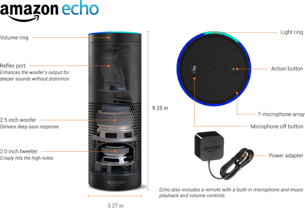
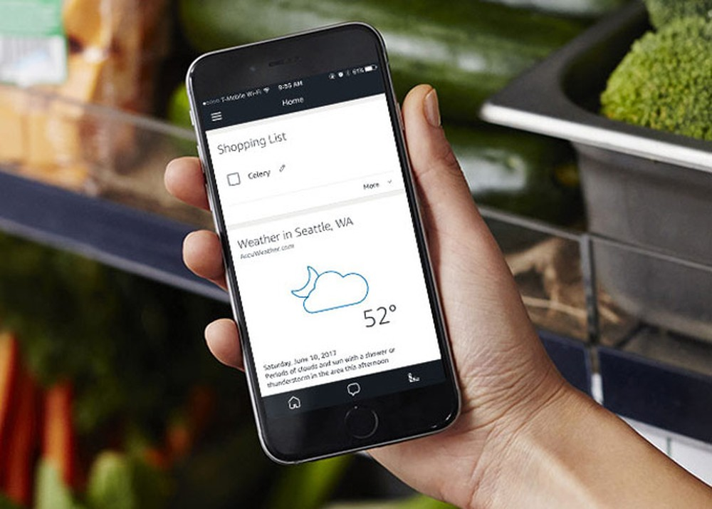

Amazon Echo
O Amazon Echo é um dispositivo cilíndrico que mede cerca de 9,25 polegadas (23,5 centímetros) de altura e 3,27 polegadas (8,3 centímetros) de diâmetro. Um botão liga / desliga do microfone e um botão de ação na parte superior do dispositivo oferecem algumas opções de controle, e elas ficam em um anel que você pode girar para ajustar o volume do alto-falante . Mas o controle principal é o conjunto de sete microfones embutido no topo, que usa tecnologia de formação de feixe e cancelamento de ruído para "ouvir" sua voz (ou seja, gravá-la e enviá-la para a nuvem).
Um anel de luz na borda externa superior fornece informações de status, como o nível do volume e se o dispositivo está transmitindo áudio ou o microfone está desligado, através de várias cores e movimentos. Um LED que permite que você saiba o status da conexão WiFi do dispositivo fica perto da base, logo acima do cabo de alimentação. O Echo vem com um adaptador de energia de 21 watts, que é sua única fonte de energia. Desculpe - você não pode carregá-lo com você.
O dispositivo incorpora dois alto-falantes internos de disparo descendente: um woofer de 2,5 polegadas (6,4 centímetros) e um tweeter de 2 polegadas (5 centímetros). Eles ocupam aproximadamente a metade inferior do cilindro. Eles estão cobertos de pano e os orifícios dos alto-falantes permitem que o som chegue aos seus ouvidos. Uma porta de reflexo na câmara de ar acima dos alto-falantes diminui a distorção e melhora o som do woofer.
As desmontagens revelaram que o dispositivo contém três placas de circuito. Uma pequena placa na parte inferior contém os drivers de energia e alto-falante da Texas Instruments (TI). Uma placa circular na parte superior (integrada à roda de controle de volume) aloja componentes dos botões de controle, roda de volume, LEDs de status e microfones. Um controle remoto opcional é vendido separadamente. O controle remoto inclui um microfone, um botão de falar e um trackpad direcional (com símbolos de reprodução / pausa, símbolos anteriores, próximos e volume) para facilitar o controle do áudio.
Alexa
Com o software da Alexa instalado, o Amazon Echo deve ser capaz de chamar um carro pelo Uber, realizar um pedido de pizza, controlar a TV ou consultar sua agenda online. De acordo com a página oficial, tudo isso é possível porque a assistente virtual foi programada para se adaptar aos diversos padrões de fala e tem um vasto vocabulário inserido. Para que o assistente possa realizar essas tarefas, é necessário instalar o Alexa App, disponível para Android ou iPhone (iOS). Vale lembrar que o recurso não está disponível em português.
O Alexa da Amazon é o nome do assistente doméstico inteligente baseado em voz. Alexa é na verdade o nome da tecnologia de inteligência artificial.O Alexa é usado nos produtos da Echo Amazon, incluindo o Amazon Echo Original, o Echo Dot, o Amazon Tap, bem como o Echo Look e o Echo Show.Para conhecer todos os produtos disponíveis e preços especiais da Alexa no Brasil, clique no link a seguir para acessar a página Loja Alexa no site da AmazonQuando você compra qualquer um desses dispositivos, o usuário deve baixar o aplicativo Alexa em seu celular para concluir a configuração.No entanto, é importante mencionar que, atualmente, o aplicativo Alexa está disponível apenas para download nos Estados Unidos.Depois que o aplicativo é instalado no dispositivo móvel, a tela inicial mostra ao usuário sua atividade com o Alexa.